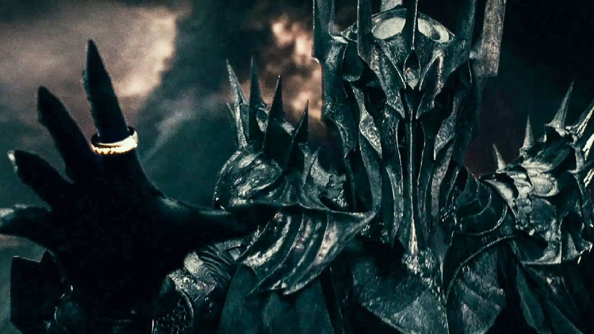
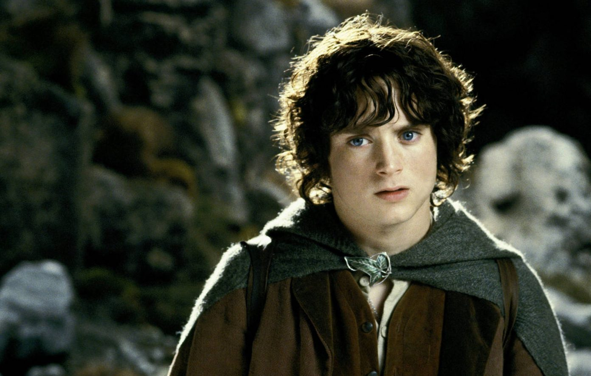

The Council of Elrond
Gandalf takes Frodo and Bilbo to the Elrond’s council. Big things are to be discussed. We are introduced to some characters attending the council.
GIMILIIIIIIIIIIIIIIIIIIII. SON OF GLOIN. HE'S HEREEEEEE

OMG LEGOLAS, SON OF THRANDUIL (KING OF ELVES OF NORTHERN MIRKWOOD)
BOROMIR, I DON’T KNOW HIS PLOT RELEVANCE BUT I KNOW HE’S SEAN BEANS AND HE PROBABLY DIES.
Okay, I’m like 3% into this chapter and I’m exhausted. Taking a nap and hopefully no more all caps when I come back.
Gloin shares his story: Dwarves long to return to Moria their ancient homeland (?) For years no dwarf would go there, for the danger is great and the ones that do make the journey perish. Balin, Ori, Oin, some of the dwarves we traveled with in The Hobbit along with other dwarves journeyed thirty years ago from the present time to reclaim their ancestral land but after a few messages about them reaching Moria, the messages ceased.
Finally, they received a message, but not from Moria, from Mordor. “The Lord Sauron the Great wished for [Dwarves’] friendship. Rings he would give for it, such as he gave of old.” And he asked urgently concerning hobbits
Thankfully we have no snitches.
Sauron’s messenger is such a cheeky liar. He asks for information about the hobbit who stole a ring which he describes as ‘it is but a trifle that Sauron fancies.” But if they give Sauron this trifle of ring, they will return the Dwarves the three 3 rings that the dwarf lords once possessed and the realm of Moria back to dwarves for eternity. Anyone with a lick of common sense and not blinded by greed would realize how obviously important and valuable this ring is to Sauron. I guess that’s how Sauron operates, he entices you with something so sweet and succulent that you cannot see how you’ll be turned into his pawn.
The shadow is approaching, the Enemy is amassing their armies at the border, and fear is widespread, but that is why Elrond called all these important people to convene and share knowledge/ come up with a strategy.
Elrond starts by saying ‘dudes imma dump some lore on your heads so you better get cozy’
It was during the Second Age. Elven smiths of Eregion by the mountains of Moria were tricked by Sauron into secrets in exchange for Sauron’s knowledge about crafting and metalurgy. Sauron had these talented elf smiths forge him the rings of power while he, Sauron himself, used the elves’ knowledge to forge the One Ring by enslave all the holders of the ring of power to his will.
However his plan was foiled by an elf, Celebrimbor, wise to Sauron’s machinations, hid the three rings of power he crafted. In the end, war broke out and the gates of Moria shut.
Elrond was there during those ancient days when they fought Sauron at his peak. It was then, the Last Alliance of Elves and Men, with Gil-galad (elf) and Elendil (men) joined forces to combat Sauron’s might. Both Gil-galad and Elendil would perish in this battle to overthrow Sauron, but they did stop him. Isildur, son of Elendil, cut Sauron’s One Ring and took it for his own.
Isildur was slain shortly after by orcs later using the ring’s ‘invisibility’, but the ring, behaving as if it had a mind of its own, slips off of Isildur and into the River Anduin.
Post-war the northern lands of Arnor floundered and failed as the lives lost from the war took their toll and their lands dwindled and lords dead. To the south, Gondor, on the other hand, thrived. They build Osgiliath, the capital, known as the Citadel of Stars. They build Minas Ithil, Tower of the Rising Moon, and Minas Anor, Tower of the Setting Sun. Goddamnnnnn, those are some badass names. These strongholds were to defend from enemies from Mordor and the White Mountains respectively.
Yet, their vigilance to guarding the keeps weaned and the blood of the Numenoreans which founded the land became diluted as years went on. Minas Ithil was conquered by enemies from Mordor and renamed Minas Morgul, the Tower of Sorcery. After that Minas Anor was renamed as Minas Tirith, the Tower of the Guard. These two cities fought from then on. The old capital, Osgiliath, between these two cities, crumbled and lay in ruin.
Boromir comes from Gondor, he speaks about the bravery of Gondor and its people in keeping the Enemy at bay despite its growing power. Should Gondor fall, the enemy would gain full access to the River Anduin (?) and the Enemy would grow even more dangerous to the lands in the West. The nameless Enemy has grown much more powerful in recent years, black horsemen come and rile up the foes and strike fear into the allies. Gondor cannot stall the enemy much longer.
Boromir had a dream to seek Elrond’s council, to seek the sword that was broken, Isildur’s Bane shall awaken, and the Halfling forth shall stand. The broken sword is in Aragorn’s possession, it is the Sword of Elendil which was said to be when Isildur’s Bane was found aka the One Ring. Frodo steps forth and reveals the ring to the council.
Boromir doubts both Aragorn and Frodo’s legitimacy. But Bilbo comes in drops an absolutely filthy freestyle verse:
“All that is gold does not glitter, Not all those who wander are lost; The old that is strong does not wither, Deep roots are not reached by the frost. From the ashes a fire shall be woken, A light from the shadows shall spring; Renewed shall be blade that was broken, The crownless again shall be king.”
Aragorn follows up Bilbo’s bars with a lil speech himself. Although Gondor and its people have fought against the Unnamed Enemy at its very border, Aragorn and the few but incredible wandering rangers of the north have kept those lands safe from the traveling evils. Were it not for them, the simple citizens of the north would have been living entire lives of terror and fear. Aragorn is that dude.
Elrond makes Bilbo tell the story of how he got his ring from Gollum, the riddles, and trickery. Then Frodo shares his tale up until he gets to Rivendell.
Gandalf recounts his own journey, how Saruman the wise, the loremaster of the rings, lulled the other wizards into a false sense of security about how the One Ring would never be found. Yet Sauron regained his power, starting in Mirkwood, where he had to flee, but then into Minas Morgul and finally the Dark Tower.
He recounts he went to Gondor to study the scrolls of Isildur’s writings on the ring, and how he and Aragorn searched for Gollum to reveal his story. Gollum is in prison but would be dangerous if loose.
Here Legolas chimes in. Gollum has escaped!
Gandalf tells his meeting with Radagast the Brown, another wizard from his order. Radagast informs Gandalf that the nine, Nazgul, as he calls them, are back and disguised as riders in black. And the riders are asking everywhere and everyone for information about the Shire. Saruman the Wise was also known as Saruman the White offers his aid to Gandalf.
So Gandalf rides to meet Saruman at Isengard. Saruman is a major asshole, incredibly snobby, and arrogant. He makes fun of Radagast for being a fool and Gandalf for being a lesser wizard.
‘For I am Saruman the Wise, Saruman Ring-maker, Saruman of Many Colours!’
Bitch, the only color you are is green with envy cause Gandalf is the coldest G alive in Middle-earth.
Saruman is a bandwagon fan. He sees that Sauron is rising to power and jumps ship to join their side. Very on the nose Tolkien, Saruman, Sauron. With a name like that you can Saw-On Deez .. nvm.
Saruman was amassing his own army of dangerous beings, wolves and orcs in Isengard. Although Saruman was not allied to Sauron yet due to his greedy ambition to have the power of the One Ring to himself, his army would nonetheless prove a great weapon for the Nameless Enemy’s arsenal.
Gandalf escaped Saruman’s great tower, Orthanc, by way of a Great Eagle, Gwaihir, sent by Radagast. Also, Great Eagles can talk. Gwaihir tells Gandalf that he can deliver him to Rohan where the swiftest horses are bred and he can ride by horseback the rest of the way. Gandalf’s horse is called Shadowfax and not even the Black Rider’s horse can match its speed.
Elrond speaks of Tom Bombadil, who seems even older and wiser than Elrond himself. Tom cannot be entrusted with the ring’s safety because the ring exerts no power of effect on him. To him, even if other people tell of the ring’s importance, it would be like a child’s toy to him. He would misplace it or forget it and be a very poor ringbearer. Finally, although Bombadil is powerful in his realm, Glorfindel suggests that should the Lord of the Rings focus his full concentration and might on Tom Bombadil, even Tom will perish.

They suggest sending it across the ocean to foreigners in the lands beyond, but it cannot be trusted. Who knows if the ring might make it back over. They suggest throwing the ring into the sea like Saruman tried tricking them into thinking the Ring was lost forever falling from Isildur’s finger into the River Anduin, flowing into the sea, and onto the seafloor. Elrond says that taking the ring west towards the sea is too obvious a choice and Gandalf says that seas and lands always change and the ring may someday be uncovered. Finally, Elrond suggests unmaking the ring by sending it into where it was first crafted, the fires of Mount Doom, shocking and silencing the council.
Boromir suggests that we use the Ring for our own purposes and to defeat the enemy with its own weapon. This suggestion is immediately shot down, the ring is evil and cannot be used fully by anyone other than Sauron.
Gloin suggests finding and wielding the rings of power to help stem the tide against the unseen enemy. But Elrond strikes it down. The Nazgul claim the nine rings given the Men. The Dwarf rings are lost or acquired by the dark lord. The elf rings lay hidden by the elves but never worn or used and their powers are not for warfare and conquest like the other rings of power but for healing.
Finally, they must decide who takes the ring on the impossible journey to Mount Doom and silence once again befalls the council. No one wants to speak up. So Frodo does and he volunteers. Despite all the uncertainty and danger that awaits, Frodo rises to the occassion.
